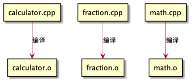
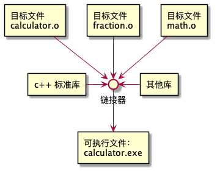

第零章第五节 编译器，链接器和库的简介¶
原文作者：Alex
首次发布：2018 年 11 月 18 日
最近更新：2019 年 11 月 13 日
译者：Dominique Zhu
翻译时间：2021 年 2 月 3 日
原文链接： https://www.learncpp.com/cpp-tutorial/introduction-to-the-compiler-linker-and-libraries/
我们将继续对上一课中的流程图进行讨论（第零章第四节 C++ 开发简介）

第四步：编译你的源代码¶
我们使用c++编译器来编译一个c++程序。c++编译器会依序检视你程序中的每一个源代码文件（ .cpp文件）并且完成两个重要的任务：
首先，编译器会检查你的代码，确保他们符合c++语言的规则。如果你的代码没有符合规则，编译器会报错（以及错误所在的行号）来帮助你定位需要进行修改的地方，编译的过程在遇到错误后会终止，并且直到错误被修复才可以继续进行编译。
其次，编译器会将你的c++源代码翻译为机器语言文件，称为 目标文件。目标文件的后缀名推通常是 .o或者 .obj，并且名字与他们被翻译而来的.cpp文件相同（例如 foo.cpp对应的目标文件是 foo.o或 foo.obj）
如果你的程序有3个 .cpp文件，那么编译器就会生成三个目标文件：

c++ 编译器适用于多种操作系统。我们不久就会讨论如何安装一个编译器，所以现在我们先不慌说。
第五步：链接目标文件与库¶
在编译器创建一个或者多个目标文件后，另一个叫做 链接器的程序就会涉入。链接器有三重职责：
首先，将所有由编译器生成的目标文件组合成一个可执行文件

其次，除了能够链接目标文件，链接器也能够连接库文件。库文件是一系列预先编译好的代码，他们被“打包”在一起这样其他程序能够重复使用。
c++语言其实是轻巧而简练的（而且你在本教程中将对它了解许多）。但是，c++中也有一个叫做 c++标准库（通常简称为“标准库”）的扩展库，这个库提供额外的功能，并且你能在你的程序中使用到。c++标准库中一个最常用到部分就是iostream库，它包含了将文字打印到显示器上以及从键盘获得用户输入的功能。几乎每一个c++程序都会以某种方式用到标准库，所以将标准库链接到你的程序是一个常规操作。只要你用到标准库的某一部分，大多数的编译器就会自动的将标准库链接，所以这个操作其实你不用去操心。
你也可以有选择性的链接其他的库。比如说，你若要写一个播放声音的程序，你不会想自己完成全部的代码，因为这包括很多的工作：从硬盘读入音频文件、检查文件的完整性、将声音数据经过操作系统送达硬件、然后最后通过扬声器播放。而如果你下载一个已经写好了做上面这些事情的库并且在你的程序中使用它，这可能会是一个更好的办法。我们会在附录中讨论如何链接这些库以及创建你自己库。
一旦链接器完成了链接所有的目标文件以及库（假设一切进行顺利），你就有了一个可以运行的可执行文件。
对于高级阅读者
一些复杂项目的开发环境会使用 makefile，这是一个描述如何构建程序的文件（e.g. 哪一个文件需要编译链接，哪一个文件需要以其他方式处理）。有整本整本的书籍写如何编写和维护makefile的，并且makefile可以成为非常强大的工具。但是，由于makefile不是c++核心语言的一部分，你也不需要用他们来继续我们的教程，所以我们不会在本教程系列中讨论它
第六步以及第七步：测试以及调试¶
这是写程序中有趣的部分（希望如此）（译者注：nono）！你能够运行你的可执行文件并且看看它是否产生了你期待的输出！
如果你的程序没有正确的工作，那么就到了做一些调试并且找出问题所在的时候了。我们不久会更具体的讨论如何测试你的程序并且调试程序
集成开发环境（IDE）¶
注意第3，4，5以及第7步都与软件（编辑器，编译器，链接器，调试器）有关。你当然可以每一步使用分开独立的不同软件，但你也可以使用一个叫做集成开发环境（IDE）的软件包，它可以将这些你需要用到的功能集成捆绑起来。我们在下一节当中将会讨论IDE并且安装一个IDE。